수질환경기사 (2008-03-02 기출문제)
1과목: 수질오염개론
1. 수온이 20℃인 어느 강에 대기에서의 용존산소 공급량이 0.08mgㆍO2/Lㆍhr이라고 한다. 이 강의 상시 용존산소 농도가 7mg/L로 유지된다고 할 때 이 강의 산소전달계수(hr-1)는? (단, α, β값은 0.9, 20℃ 포화용존 산소농도 9.0mg/L)
- 0.02
- 0.⑤
- 0.08
- 0.12
(정답률: 알수없음)

2. 어느 공장의 COD가 5,000mg/L, BOD5가 2,100mg/L이었다면 이 공장의 NBDCOD는? (단, K=BODuBOD5 = 1.5)
- 1850mg/L
- 1550mg/L
- 1450mg/L
- 1250mg/L
(정답률: 65%)
3. 산소의 포화농도가 9mg/L인 하천에서 처음의 DO농도가 6mg/L라면 물이 3일 유하한 후의 하류에서의 DO 부족량(mg/L)은? (단, 최종 BOD=10mg/L이며, K1과 K2는 각각 0.1day-1과 0.2day-1, 밑수는 상용대수이다.)
- 약 2.3
- 약 3.3
- 약 4.3
- 약 5.3
(정답률: 50%)
4. 산소가 적은 곳에서 번식하며 H2S 를 산화하고 그 에너지를 이용하여 생장하는 세균은?
- Sphaerotillus
- Zoogloea
- Beggiatoa
- Crenothrix
(정답률: 54%)
5. Glycine(C2H5O2N)이 호기성 조건하에서 CO2, H2O, NH3로 변화되고, 다시 NH3가 H2O, HNO3로 변화된다면 30g의 Glycine이 CO2, H2O, HNO3로 변화될 때 이론적으로 소요되는 산소총량(g)은?
- 약 35
- 약 45
- 약 55
- 약 65
(정답률: 80%)
6. 3g의 아세트산(CH3COOH)을 증류수에 녹여 1L로 하였다. 이 용액의 수소이온 농도는? (단, 이온화 상수값은 1.75×10-5 이다.)
- 6.3×10-7mol/L
- 7.3×10-6mol/L
- 8.3×10-5mol/L
- 9.3×10-4mol/L
(정답률: 알수없음)
7. 다음의 내용으로 정의되는 법칙은?
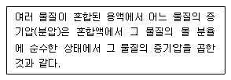
- Graham's 법칙
- Raoult's 법칙
- Henry's 법칙
- Darton's 법칙
(정답률: 28%)
8. 주로 육안적 동물을 대상으로 하여 전생물수에 대한 청수성 및 광범위 출현 미생물의 백분율로 표시되는 BI(생물지수)의 계산식으로 맞는 것은? (단, A: 청수성 미생물, B: 광범위 출현종의 미생물, C: 오수성 미생물)
- [(A+B)/(A+2B+C)]×100
- [(2A+B)/(A+2B+C)]×100
- [(A+B)/(A+B+C)]×100
- [(2A+B)/(A+B+C)]×100
(정답률: 알수없음)
9. 호소나 저수지의 여름철 성층현상에 관한 설명 중 옳지 않은 것은?
- 수온차에 따라 표수층, 수온약층, 심수층의 성층을 이룬다.
- 하층의 물은 표층으로 잘 순환(turn over)되지 않고, 수직운동은 상층에만 국한된다.
- 완충작용을 하는 수온약층의 깊이에 따른 수온차이는 표층수에 비해 매우 적다.
- 봄철 기온이 높고 바람이 약할 경우에는 성층이 늦게 이루어진다.
(정답률: 알수없음)
10. 다음은 해수의 특성을 기술한 것이다. 틀린 것은?
- 해수의 pH는 약 8.2정도이며 염분은 극지방에 비하여 적도 부근에서 다소 낮다.
- 해수의 밀도는 염분, 수온, 수압의 함수로 수심이 깊을수록 증가한다.
- 해수 내 전체질소 중 약 35% 정도는 암모니아성 질소와 유기 질소의 형태이다.
- 해수의 Mg/Ca 비는 3~4 정도로 담수에 비하여 크다.
(정답률: 58%)
11. 원핵세포에 관한 설명으로 틀린 것은?
- 원핵세포의 세포벽은 세포막의 외부에 위치하며 세포를 지지하고 보호해 주는 견고한 구조로 되어 있다.
- 원핵세포의 리보솜은 단백질과 리보헥산으로 구성되어 있는 작은 과립체이다.
- 원핵세포의 세포소기관은 에너지 생산기능을 수행한다.
- 원핵세포의 세포크기는 진핵세포에 비하여 작으며 유사분열이 없다.
(정답률: 알수없음)
12. 지하수 수직 깊이에 따른 수질분포의 특성으로 틀린 것은?
- 산화-환원전위 : 상층수는 높고 하층수는 낮다.
- 알칼리도 : 상층수는 작고 하층수는 크다.
- 염분 : 상층수는 높고 하층수는 낮다.
- 질소 : 상층수는 낮고 하층수는 높다.
(정답률: 알수없음)
13. A하천의 탈산소계수를 조사한 결과 20℃에서 0.19/day이었다. 하천수의 온도가 25℃로 증가되었다면 탈산소계수는 얼마로 되겠는가? (단, 온도보정계수는 1.047이다.)
- 0.22/day
- 0.24/day
- 0.26/day
- 0.28/day
(정답률: 알수없음)
14. 물이 함유하고 있는 이온 용해염의 농도를 종합적으로 표시하는 것으로 수온, pH와 더불어 호수 내 수계의 구분이나 성층구조 현상, 수질의 연속적 변화양상 등을 쉽게 파악할 수 있는 지표는?
- 총용존성고형물(TDS)
- 전기전도도
- 이온강도
- 비저항계수
(정답률: 39%)
15. 소수성 콜로이드에 관한 설명으로 틀린 것은?
- 염에 아주 민감하다.
- 표면장력이 용매보다 약하다.
- 현탁상태(sol)로 존재한다.
- 틴달효과가 크다.
(정답률: 40%)
16. 방사성 핵 종인 P32를 100mg/L 포함하고 있는 폐수가 있다. 이 P32의 반감기가 14.3일이라면 이 폐수의 P32를 10mg/L로 감소시키려면 얼마동안 저장하여야 하는가? (단, 1차반응 기준)
- 24.6일
- 47.5일
- 72.1일
- 96.7일
(정답률: 74%)
17. 수은(Hg)에 관한 설명으로 틀린 것은?
- 수은은 상온에서 액체상태로 존재한다.
- 대표적 만성질환으로는 미나마타병, 헌터-루셀 증후군이 있다.
- 유기수은은 금속상태의 수은보다 생물체내에 흡수력이 강하다.
- 아연정련업, 도금공장, 도자기제조업에서 주로 발생한다.
(정답률: 알수없음)
18. 용존산소농도가 9.0mg/L인 물 200L가 있다면, 이 물의 용존산소를 완전히 제거하려 할 때 필요한 이론적 Na2SO3의 량(g)은? (단, 원자량 Na=23)
- 14.2
- 15.2
- 16.2
- 17.2
(정답률: 36%)
19. 약산인 0.01N-CH3COOH가 6% 해리되어 있다면 이 수용액의 pH는?
- 3.2
- 3.5
- 3.8
- 4.1
(정답률: 알수없음)
20. CaF2의 포화용액 중에 F-의 농도는 4×10-4mol/L이다. 이때 CaF2의 용해도적은?
- 3.2×10-3
- 3.2×10-9
- 3.2×10-10
- 3.2×10-11
(정답률: 27%)
2과목: 상하수도계획
21. 관거의 길이 1200m, 유입시간 5분, 관거 내 평균유속 1.0m/sec, 유출계수 0.5, 강우강도(mm/hr)
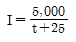
, 배수면적 2㎢ 일 때의 우수유출량은? (단, 합리식 적용 기준)- 13.8m3/sec
- 19.8m3/sec
- 23.8m3/sec
- 27.8m3/sec
(정답률: 31%)
22. 다음은 수원지에서부터 가정까지의 급수계통을 나타낸 것이다. 맞는 것은?
- 취수-도수-정수-송수-배수-급수
- 취수-송수-정수-도수-배수-급수
- 취수-도수-송수-정수-배수-급수
- 취수-송수-도수-정수-배수-급수
(정답률: 알수없음)
23. 호소, 댐을 수원으로 하는 경우 ‘취수문’에 관한 설명과 가장 거리가 먼 것은?
- 일반적으로 중, 소량 취수에 쓰인다.
- 일반적으로 가물막이(cofferdam)를 필요로 한다.
- 파랑, 결빙 등의 기상조건에 영향이 거의 없다.
- 갈수기에 호소에 유입되는 수량 이하로 취수할 계획이면 안정 취수가 가능하다.
(정답률: 70%)
24. 수도용 폴리에틸렌관의 장, 단점으로 틀린 것은?
- 열이나 자외선에 약하다.
- 내면조도가 변화하지 않는다.
- 라이닝(Lining)의 종류가 풍부하다.
- 융착접속으로는 우천시나 용천수지반에서의 시공이 곤란하다.
(정답률: 알수없음)
25. 다음 조건하에서 매설된 하수도관이 받는 하중은?
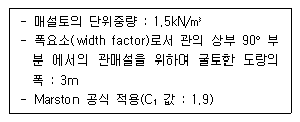
- 약 26 kN/m
- 약 29 kN/m
- 약 34 kN/m
- 약 37 kN/m
(정답률: 알수없음)
26. 펌프의 토출량이 0.20m3/sec, 흡입구 유속 3m/sec인 경우, 펌프의 흡입구경은?
- 약 198mm
- 약 292mm
- 약 323mm
- 약 413mm
(정답률: 알수없음)
27. 폭 2m인 직사각형 상수도 도수로에 수심 1m로 물이 흐르고 있다. 조도계수는 0.03이고, 관로의 경사가 1/1000 일 때 도수로에 흐르는 유량은? (단, Manning 공식 적용)
- 1.33 m3/sec
- 2.23 m3/sec
- 3.22 m3/sec
- 4.42 m3/sec
(정답률: 27%)
28. 하수관거의 접합방법 중 굴착깊이를 얕게 함으로 공사비용을 줄일 수 있으며 수위상승을 방지하고 양정고를 줄일 수 있어 펌프로 배수하는 지역에 적합하나 상류부에서는 동수경사선이 관정보다 높이 올라 갈 우려가 있는 것은?
- 수면접합
- 관중심접합
- 관저접합
- 관정접합
(정답률: 알수없음)
29. 우물의 양수량 결정에 사용되는 ‘적정 양수량’의 정의로 맞는 것은?
- 최대 양수량의 70% 이하의 양수량
- 최소 양수량의 70% 이하의 양수량
- 안전 양수량의 70% 이하의 양수량
- 한계 양수량의 70% 이하의 양수량
(정답률: 54%)
30. 다음과 같은 조건에서 우수월류위어의 위어 길이는?
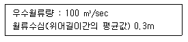
- 118m
- 224m
- 338m
- 442m
(정답률: 알수없음)
31. Cavitation 발생을 방지하기 위한 대책으로 틀린 것은?
- 펌프의 설치위치를 가능한 한 낮추어 가용 유효흡입수두를 크게 한다.
- 펌프의 회전속도를 낮게 선정하여 필요 유효흡입수두를 크게 한다.
- 흡입측 밸브를 완전히 개방하고 펌프를 운전한다.
- 흡입관에 손실을 가능한 한 작게 하여 가용 유효흡입수두를 크게 한다.
(정답률: 67%)
32. 취수보에 관한 설명과 가장 거리가 먼 것은?
- 유심이 취수구에 가까우며 안정되고 홍수에 의한 하상변화가 적은 지점으로 한다.
- 원칙적으로 철근콘크리트 구조로 한다.
- 원칙적으로 홍수의 유심방향과 직각의 직선형으로 가능한 한 하천의 직선부에 설치한다.
- 갈수시 수면하강에 따라 하류에 위치한 공작물에 미치는 영향이 적은 지점에 설치한다.
(정답률: 알수없음)
33. 다음의 펌프장 시설(하수배제방식-펌프장의 종류)과 계획하수량을 연결한 것 중 틀린 것은?
- 분류식 - 중계펌프장 - 계획시간최대오수량
- 분류식 - 빗물펌프장 - 계획우수량
- 합류식 - 중계펌프장 - 계획시간최대오수량
- 합류식 - 처리장내 펌프장 - 강우시 계획오수량
(정답률: 알수없음)
34. 우수배제계획시 계획 우수량을 정하기 위하여 고려하여야 하는 사항에 대한 내용으로 틀린 것은?
- 유출계수는 관로 형태에 따른 기초유출계수로부터 총괄 유출계수를 구하는 것을 원칙으로 한다.
- 확률년수는 원칙적으로 5~10년을 원칙으로 하되, 지역의 중요도 또는 방재상 필요성이 있는 경우는 이보다 크게 정할 수 있다.
- 유입시간은 최소단위배수구의 지표면 특성을 고려하여 구한다.
- 유하시간은 최상류관거의 끝으로부터 하류관거의 어떤 지점까지의 거리를 계획유량에 대응한 유속으로 나누어 구하는 것을 원칙으로 한다.
(정답률: 10%)
35. 상수처리시설 중 플록형성지의 플록형성표준시간은? (단, 계획정수량 기준)
- 5~10분간
- 10~20분간
- 20~40분간
- 40~60분간
(정답률: 알수없음)
36. 배수시설인 배수관의 수압에 대한 다음 설명 중 ( )안에 알맞는 내용은?
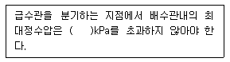
- 500
- 700
- 900
- 1100
(정답률: 알수없음)
37. 하수 관거시설에 대한 설명으로 잘못된 것은?
- 오수관거의 유속은 계획시간 최대오수량에 대하여 최소 0.6m/sec, 최대 3.0m/sec로 한다.
- 우수관거 및 합류관거에서의 유속은 계획우수량에 대하여 최소 0.8m/sec, 최대 3.0m/sec로 한다.
- 오수관거의 최소관경은 200mm를 표준으로 한다.
- 우수관거 및 합류관거의 최소관경은 350mm를 표준으로 한다.
(정답률: 55%)
38. 다음 중 수격작용(water hammer)를 방지 또는 줄이는 방법이라 할 수 없는 것은?
- 펌프에 fly wheel을 붙여 펌프의 관성을 증가시킨다.
- 흡입측 관로에 압력조절수조(surge tank)를 설치하여 부압을 유지시킨다.
- 펌프 토출구 부근에 공기탱크를 두거나 부압 발생지점에 흡기밸브를 설치하여 압력강하시 공기를 넣어준다.
- 관내유속을 낮추거나 관거상황을 변경한다.
(정답률: 알수없음)
39. 하수도에 사용되는 원형 관거에 대한 설명으로 틀린 것은?
- 수리학적으로 유리하며 역학계산이 간단하다.
- 일반적으로 내경 3000mm 정도까지 공장제품을 사용할 수 있다.
- 공장제품으로 접합부를 최소화할 수 있어 지하수 침투량에 대한 염려가 적다.
- 안전하게 지지시키기 위해서 모래기초 외에 별도로 적당한 기초공을 필요로 하는 경우가 있다.
(정답률: 47%)
40. 계획 오수량을 정할 때 고려해야 할 사항 중 틀린 것은?
- 합류식에서 우천시 계획오수량은 원칙적으로 계획시간 최대 오수량의 3배 이상으로 한다.
- 지하수량은 1인 1일 최대 오수량의 10~20%로 한다.
- 계획시간 최대 오수량은 계획 1일 최대 오수량의 1시간당 수량의 1.3~1.8배를 표준으로 한다.
- 계획 1일 평균오수량은 계획 1일 최대 오수량의 60~70%를 표준으로 한다.
(정답률: 알수없음)
3과목: 수질오염방지기술
41. 공단 내에 새 공장을 건립할 계획이 있다. 공단의 폐수처리장은 현재 876L/sec의 폐수를 처리하고 있다. 공단 폐수처리장에서 Phenol을 제거할 조치를 강구치 않는다면 폐수처리장의 방류수내 Phenol의 농도는 몇 mg/L으로 예측되는가? (단, 새 공장에서 배출될 Phenol의 농도는 10g/m3이고 유량은 87.6L/sec이며 새 공장 외에는 Phenol 배출공장이 없다.)
- 0.51 mg/L
- 0.71 mg/L
- 0.91 mg/L
- 1.11 mg/L
(정답률: 알수없음)
42. 다음 조건에서 탈질화에 사용되는 anoxic 반응조의 체류시간(hr)은?
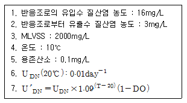
- 약 4시간
- 약 6시간
- 약 8시간
- 약 10시간
(정답률: 10%)
43. 포기조의 MLSS농도를 3,000mg/L로 유지하기 위한 슬러지 반송비는? (단, SVI=100, 유입수, 생성 SS는 무시한다.)
- 0.34
- 0.37
- 0.40
- 0.43
(정답률: 알수없음)
44. 유량이 2,000m3/일 이고, SS농도가 220mg/L인 폐수의 SS 처리효율이 60%일 때 처리장에서 하루 발생하는 슬러지의 양은? (단, 슬러지 비중 : 1.03, 함수율 94%, 처리된 SS는 모두 슬러지로 발생한다.)
- 약 1.8 m3
- 약 2.1 m3
- 약 3.4 m3
- 약 4.3 m3
(정답률: 29%)
45. 다음 중 생물학적 탈질 공정에서 일반적으로 탄소원 공급용으로 가해주는 것은?
- CH3OH
- C2H5OH
- CH3COOH
- C2H4OH
(정답률: 46%)
46. 용수 응집시설의 급속 혼합조를 설계하고자 한다. 반응조의 설계유량은 15,140m3/day이며 정방형으로 하고 깊이는 폭의 1.25배로 한다면 교반을 위한 필요동력은? (단, μ = 0.00131Nㆍs/m2, 속도 구배 = 900sec-1, 체류시간 30초이다.)
- 약 4.3kW
- 약 5.6kW
- 약 6.8kW
- 약 7.3kW
(정답률: 39%)
47. 슬러지를 Leaf test한 결과 아래와 같은 실험값을 얻었다. 주어진 실험 조건하에서 탈수 시 여과속도는 건조고형물을 기준할 때 얼마가 되겠는가?
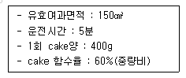
- 146 kg/m2∙hr
- 128 kg/m2∙hr
- 89 kg/m2∙hr
- 65 kg/m2∙hr
(정답률: 30%)
48. 재래식 활성 슬러지 처리시설에서 1차 침전 후의 BOD5가 200mg/L인 폐수 2,000m3/day를 처리하려고 한다. 포기조의 유기물 부하는 0.2kg∙BOD/kg∙MLVSS∙day, 체류시간은 6hr이라면 MLVSS 값은?
- 1000mg/L
- 2000mg/L
- 3000mg/L
- 4000mg/L
(정답률: 60%)
49. 1일 폐수배출량이 500m3이고 BOD가 300mg/L, 질소(N)가 5mg/L, SS가 100mg/L인 폐수를 활성 슬러지법으로 처리하고자 한다. 이론적으로 공급해야 할 요소[CO(NH2)2]의 양은 하루에 몇 kg인가? (단, BOD:N:P의 비율은 100:5:1로 가정)
- 약 3
- 약 5
- 약 8
- 약 11
(정답률: 20%)
50. 생물학적 인, 질소제거 공정에서 호기조, 무산소조, 혐기조 공정의 주된 역할을 가장 알맞게 설명한 것은? (단, 유기물 제거는 고려하지 않음, 호기조-무산소조-혐기조 순서)
- 인의 과잉흡수 - 탈질소 - 인의 방출
- 인의 과잉흡수 - 인의 방출 - 탈질소
- 인의 방출 - 인의 과잉흡수 - 탈질소
- 인의 방출 - 탈질소 - 인의 과잉흡수
(정답률: 알수없음)
51. 침전조 수심을 3.0m라 가정하고, 침전조에서 다음 입자를 제거하는데 필요한 이론 체류시간(hr)은? (단, -. 독립입자 침강 기준(스토크식 적용),-. 응집 후 침전조에서 제거하려는 상대밀도 1.002g/cm3, 지름 1.0mm인 명반플럭, -. 유체밀도 ρ=1.0g/cm3, 점성계수 μ=1.307×10-3kg/mㆍsec)
- 1hr
- 2hr
- 3hr
- 4hr
(정답률: 알수없음)
52. 탈기법을 이용, 폐수 중의 암모니아성 질소를 제거하기 위하여 폐수의 pH를 조절하고자 한다. 수중 암모니아를 NH3(기체분자의 형태) 99%로 하기 위한 pH는? (단, 암모니아성 질소의 수중에서의 평형은 다음과 같다. NH3 + H2O ⇄ NH4+ + OH-, 평형상수 K= 1.8×10-5)
- 11.25
- 11.45
- 11.65
- 11.85
(정답률: 알수없음)
53. 폐수 유량이 3000m3/day, 부유 고형물의 농도가 150mg/L이다. 공기부상 시험에서 공기와 고형물의 비가 0.⑤mg∙air/mg∙solid 일 때 최적의 부상을 나타낸다. 설계온도 20℃, 이때의 공기용해도는 18.7mL/L이다. 흡수비 0.5, 부하율이 0.12 m3/m2∙min일 대 반송이 있으며 운전압력이 3.5기압인 부상조의 표면적은?
- 24.5m2
- 37.5m2
- 42.0m2
- 51.5m2
(정답률: 알수없음)
54. 처리인구 2000명인 활성슬러지공정과 혐기성소화조 공정을 갖춘 폐수처리시설이 있다. 활성슬러지 공정에서 발생된 1차 및 2차 혼합슬러지의 고형물 발생량은 0.104kg/인ㆍday이며 혼합 슬러지의 건조 고형물은 4.5%이다. 이를 혐기성 소화조(35℃에서 운전)에 유입하여 처리하고자 한다. 가장 추운 1월에 유입슬러지 온도가 11.1℃라면 유입슬러지를 소화조의 운전 온도까지 가열하는데 필요한 열량은? ( 단, 슬러지의 비중 1.0, 비열은 4,200 J/kgㆍ℃)
- 약 19,330 kJ/hr
- 약 17,330 kJ/hr
- 약 15,440 kJ/hr
- 약 11,440 kJ/hr
(정답률: 알수없음)
55. 함수율 95%인 생분뇨가 분뇨처리장에 100m3/day의 율로 투입되고 있다. 이 분뇨에는 휘발성 고형물(VS)이 총고형물(TS)의 50%이고, VS의 60%가 소화가스로 발생되었다. VS 1kg당 0.6m3의 소화가스가 발생되었다면 분뇨의 소화가스 총발생량(m3/day)은? (단, 분뇨의 비중은 1로 한다.)
- 600 m3/day
- 700 m3/day
- 800 m3/day
- 900 m3/day
(정답률: 20%)
56. 평균 유량이 20000m3/day인 도시하수처리장의 1차 침전지를 설계하고자 한다. 1차 침전지에 대한 권장 설계 기준은 최대 표면부하율 50m3/m2ㆍday, 평균 표면부하율 20m3/m2∙day이다. 최대유량/평균유량=2.75이라면 침전조의 직경은?
- 32.7m
- 37.4m
- 42.5m
- 48.7m
(정답률: 77%)
57. 연속회분식 활성슬러지 반응조(SBR)의 장점을 설명한 것 중 틀린 것은?
- 수리학적 과부하에도 MLSS의 누출이 없다.
- 질소와 인의 동시 제거시 운전의 유연성이 적다.
- 설계자료가 제한적이다.
- 소유량에 적합하다.
(정답률: 알수없음)
58. 폭기조의 유입수 BOD=150mg/L, 유출수 BOD = 10mg/L, MLSS = 2500mg/L, 미생물성장계수(Y)=0.7kg∙MLSS/kg∙BOD, 내생호흡계수(ks) = 0.⑤day-1, 폭기시간(Δt)=6시간이다. 미생물체류시간(θc)은?
- 3.4일
- 5.4일
- 7.4일
- 9.4일
(정답률: 43%)
59. 회전원판법(RBC)의 장점과 가장 거리가 먼 것은?
- 미생물에 대한 산소 공급 소요전력이 적다.
- 고정메디아로 높은 미생물 농도 및 슬러지 일령을 유지할 수 있다.
- 기온에 따른 처리효율의 영향이 적다.
- 재순환이 필요없다.
(정답률: 알수없음)
60. 다음 중 흡착등온 관련 식과 가장 거리가 먼 것은?
- Michaelis-Menten
- BET
- Freundlich
- Langmuir
(정답률: 70%)
4과목: 수질오염공정시험기준
61. 실험의 일반사항에 관한 설명으로 틀린 것은?
- 유효측정농도는 최대정량한계를 의미하며 그 이하는 불검출된 것으로 간주한다.
- ‘표준편차율’이란 표준편차를 평균값으로 나눈 값의 백분율을 말한다.
- ‘정량범위’라 함은 본 시험방법에 따라 시험할 경우 표준편차율 10%이하에서 측정할 수 있는 정량하한과 정량상한의 범위를 말한다.
- 분석용 저울은 0.1mg까지 달 수 있는 것이어야 한다.
(정답률: 30%)
62. 흡광광도법으로 페놀류 분석시, 측정파장과 검액의 색을 알맞게 짝지은 것은? (단, 수용액 기준)
- 620nm - 청색
- 570nm - 황색
- 510nm - 적색
- 470nm - 청록색
(정답률: 알수없음)
63. 금속성분을 측정하기 위한 시료의 전처리 방법 중 유기물을 다량 함유하고 있으면서 산화분해가 어려운 시료에 적용되는 방법은?
- 질산-염산에 의한 분해
- 질산-불화수소산에 의한 분해
- 질산-과염소산에 의한 분해
- 질산-과염소산-불화수소산에 의한 분해
(정답률: 알수없음)
64. 노말헥산추출물질 측정에 대한 설명 중 틀린 것은?
- 시료의 pH를 4 이하의 산성으로 하여 노말헥산층에 용해되는 물질을 노말헥산으로 추출하여 노말헥산을 증발시킨 잔류물의 무게로부터 구하는 방법이다.
- 광유류의 양을 시험하고자 할 경우에는 활성규산마그네슘(플로리실)칼럼을 이용한다.
- 시료용기는 폴리에틸렌병을 사용하여야 하며 채취한 시료전량을 사용하여 시험한다.
- 정량범위는 2~200mg이다.
(정답률: 34%)
65. 총대장균군의 시료채취 및 정량방법에 관한 설명 중 틀린 것은?
- 시료 중 잔류염소는 멸균된 10% 티오황산나트륨으로 제거한다.
- 채취된 시료는 어떠한 경우에도 저온(10℃ 이하)의 상태로 운반하여야 한다.
- 시료의 균일화를 위하여 액상시료는 강하게 진탕한다.
- 고형물이 포함된 시료는 멸균 여과지로 여과한 후 적당량의 희석액과 혼합하여 사용한다.
(정답률: 알수없음)
66. 다음은 알칼리성 100℃에서 과망간산칼륨에 의한 COD측정에 관한 내용이다. ( )안에 맞는 것은?
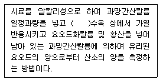
- 15분간
- 30분간
- 60분간
- 120분간
(정답률: 34%)
67. 이온전극법에 대한 설명 중 틀린 것은?
- 시료용액의 교반은 이온전극의 응답속도 이외의 전극범위, 정량한계 값에는 영향을 미치지 않는다.
- 시료 중의 음이온 및 양이온의 분석에 이용된다.
- 이온전극법에 사용하는 장치의 기본구성은 전위차계, 이온전극, 비교전극, 시료용기 및 자석교반기로 되어 있다.
- 이온전극의 종류에는 유리막 전극, 고체막 전극, 격막형 전극으로 구분된다.
(정답률: 알수없음)
68. 다음 중 색도의 측정에 관한 설명 중 옳지 않은 것은?
- 색도의 측정은 아담스-니컬슨의 색도 공식을 근거로 하고 있다.
- 시각적으로 눈에 보이는 색상과 관계 없이 단순 색도차 또는 단일 색도차를 계산한다.
- 백금-코발트 표준물질과 아주 다른 색상의 폐하수에는 적용할 수 없다.
- 시료 중의 부유물질은 제거하여야 한다.
(정답률: 47%)
69. 다음은 셀레늄 측정원리에 관한 설명이다. ( )안에 알맞는 내용은?
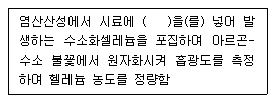
- 염화제일주석
- 황산구리
- 아연분말
- 제이철암모늄
(정답률: 50%)
70. 다음은 구리의 흡광광도법(디에틸디티오카르바민산법)의 시험방법에 관한 설명이다. 틀린 것은?
- 시료 중에 시안화합물이 함유되어 있으며 수산화물로 공침 제거한 다음 시험한다.
- 비스머스(Bi)가 구리의 양보다 2배 이상 존재할 경우에는 황색을 나타내어 방해한다.
- 추출용매는 벤젠을 사용할 수도 있다.
- 무수황산 나트륨 대신 건조 기름종이를 사용하여 여과하여도 된다.
(정답률: 24%)
71. 다음은 아연의 흡광광도법(진콘법)의 시험방법에 관한 설명이다. 틀린 것은?
- 아연이온이 pH 약 4에서 진콘과 반응하여 생성되는 물질의 흡광도를 측정하는 방법이다.
- 2가 망간이 공존하지 않은 경우에는 아스코르빈산나트륨을 넣지 않는다.
- 청색 킬레이트 화합물의 흡광도를 620nm에서 측정한다.
- 시료 중 시안화칼륨과 착화합물을 형성하지 않는 중금속 이온이 공존하면 발색할 때 혼탁하여 방해한다.
(정답률: 38%)
72. 다음은 크롬의 흡광광도법(디페닐카르바지드법)의 시험방법에 관한 설명이다. 틀린 것은?
- 시료 중 철이 2.5mg이하로 공존할 경우에는 디페닐카르바지드 용액을 넣기 전에 5% 피로인산나트륨 10수화물 용액 2mL를 넣어주면 영향이 없다.
- 정량범위는 0.002~0.⑤mg이며 표준편차율은 10～3%이다.
- 과망간산칼륨으로 크롬이온 전체를 6가 크롬으로 산화시킨다.
- 파장 460nm에서 적자색 착화합물의 흡광도를 측정하는 방법이다.
(정답률: 알수없음)
73. 수질오염공정시험방법상 흡광광도법을 적용한 페놀류 측정에 관한 내용으로 맞는 것은?
- 정량범위는 직접법일 때 0.025~0.⑤mg이다.
- 표준편차는 3% 이하이다.
- 증류한 시료에 염화암모늄-암모니아 완충액을 넣어 pH10으로 조절한다.
- 4-아미노 안티피린과 페리시안 칼륨을 넣어 생성된 청색의 안티피린계 색소의 흡광도를 측정하는 방법이다.
(정답률: 37%)
74. 전기전도도 측정시 전도도표준액 조제에 사용되는 시약은?
- 염화칼슘
- 염화제이암모늄
- 염화암모늄
- 염화칼륨
(정답률: 알수없음)
75. 가스크로마토그래피법에서 일반적으로 사용하는 정지상 액체의 종류 중 탄화수소계가 아닌 것은?
- 헥사데칸
- 스쿠아란
- 폴리페닐에테르
- 진공용 그리스
(정답률: 50%)
76. 시료를 온도 4℃, H2SO4로 pH를 2 이하로 보존하여야 하는 측정대상 항목이 아닌 것은?
- 총질소
- 총인
- 화학적산소요구량
- 유기인
(정답률: 알수없음)
77. 알킬수은을 가스크로마토그래피법으로 분석하고자 한다. 이때 운반가스의 유속범위로 가장 적절한 것은?
- 3~8 mL/분
- 15~25 mL/분
- 30~80 mL/분
- 150~250 mL/분
(정답률: 30%)
78. 질산성 질소의 정량시험 방법 중 소량의 시료로 정량이 가능하며 시험 조작이 간편하고 재현성도 우수한 방법은? (단, 정량범위는 0.1 mg∙NO3-N/L 이상)
- 가스크로마토그래피법
- 자외선 흡광광도법
- 이온크로마토그래피법
- 데발다합금 환원증류법
(정답률: 40%)
79. 개수로에 의한 유량 측정시 수로의 구성, 재질, 형상, 기울기 등이 일정하지 않은 경우에 관한 설명으로 틀린 것은?
- 수로는 될수록 직선적이며, 수면이 물결치지 않는 곳을 고른다.
- 10m를 측정구간으로 하여 5m마다 유수의 횡단면적을 측정한다.
- 유속의 측정은 부표를 사용하여 10m 구간을 흐르는데 걸리는 시간을 스톱워치(Stop Watch)로 잰다.
- 수로의 수량은 Q=60V∙A, V = 0.75Ve로 한다. (Q : 유량[m3/분], V : 총평균 유속[m/sec], Ve: 표면 최대 유속[m/sec], A : 평균단면적[m2])
(정답률: 48%)
80. 시료의 전처리 방법인 피로리딘 디티오카르바민산 암모늄 추출법(APDC-MIBK)에서 사용하는 지시약으로 알맞은 것은?
- 티몰블루우ㆍ에틸 알코올용액
- 메타이소부틸 에틸 알코올 용액
- 브롬페놀블루우 에틸 알코올 용액
- 메타크레졸퍼플 에틸 알코올 용액
(정답률: 34%)
5과목: 수질환경관계법규
81. 수영 등 물놀이 행위 제한 권고기준으로 맞는 것은?
- 대장균 : 500(개체수/100mL) 이상
- 대장균 : 1000(개체수/100mL) 이상
- 대장균 : 2000(개체수/100mL) 이상
- 대장균 : 3000(개체수/100mL) 이상
(정답률: 37%)
82. 수질 및 수생태계 환경기준(하천) 중 사람의 건강보호를 위한 기준으로 맞는 것은?
- 카드뮴 : 0.⑤ mg/L 이하
- 사염화탄소 : 0.004 mg/L 이하
- 6가 크롬 : 0.01 mg/L 이하
- 납(Pb) : 0.01 mg/L 이하
(정답률: 39%)
83. 사업장별 환경기술인의 자격기준에 관한 설명으로 틀린 것은?
- 대기환경기술인으로 임명된 자가 수질환경기술인의 자격을 함께 갖춘 경우에는 수질환경기술인을 겸임할 수 있다.
- 연간 90일 미만 조업하는 제1종부터 제3종까지의 사업장은 제4종 사업장, 제5종 사업장에 해당하는 환경기술인을 선임할 수 있다.
- 공동방지시설의 경우에는 폐수배출량이 제4종 또는 제5종 사업장의 규모에 해당하면 제3종 사업장에 해당하는 환경기술인을 두어야 한다.
- 제1종 또는 제2종 사업장 중 3개월간 실제 작업한 날만을 계산하여 1일 평균 17시간 이상 작업한 경우에는 환경기술인을 각각 2명 이상 두어야 한다.
(정답률: 알수없음)
84. 다음의 ( )안에 맞는 내용은?
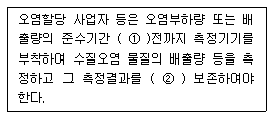
- ① 60일, ② 2년간
- ① 90일, ② 2년간
- ① 60일, ② 3년간
- ① 90일, ② 3년간
(정답률: 알수없음)
85. 오염총량관리기본계획의 수립시 포함하여야 할 사항이 아닌 것은?
- 당해 지역 개발계획의 내용
- 수계구간별, 오염물질별 배출원 및 배출기간
- 관할 지역에서 배출되는 오염부하량의 총량 및 저감계획
- 당해 지역 개발계획으로 인하여 추가로 배출되는 오염부하량 및 그 저감계획
(정답률: 24%)
86. 배출시설에서 배출되는 수질오염물질을 방지시설에 유입하지 아니하고 배출하거나 방지시설에 유입하지 아니하고 배출할 수 있는 시설을 설치하는 행위를 한 자에 대한 벌칙 기준은? (단, 폐수무방류배출시설 제외)
- 7년 이하의 징역 또는 5천만원 이하의 벌금
- 5년 이하의 징역 또는 3천만원 이하의 벌금
- 3년 이하의 징역 또는 2천만원 이하의 벌금
- 2년 이하의 징역 또는 1천만원 이하의 벌금
(정답률: 알수없음)
87. 수질오염방지시설 중 화학적 처리시설에 해당되는 것은?
- 응집시설
- 살균시설
- 산화시설(산화조(酸化槽) 또는 산화지(酸化池)를 말한다.)
- 접촉조
(정답률: 63%)
88. 낚시 제한구역 내에서의 낚시를 하고자 하는 자에 대한 제한 행위와 가장 거리가 먼 것은?
- 1명이 5대의 낚시대를 사용하는 행위
- 취사 행위
- 1개의 낚시대에 2개의 낚시 바늘로 떡밥, 어분을 끼워 던지는 행위
- 고기를 잡기 위하여 폭발물, 배터리, 어망 등을 이용하는 행위(내수면 어업법에 의하여 면허, 허가를 받거나 신고를 하고 어망을 사용하는 경우는 제외함)
(정답률: 40%)
89. 환경부장관이 수립하는 대권역 수질 및 수생태계 보전계획에 포함되어야 하는 사항과 가장 거리가 먼 것은?
- 점오염원, 비점오염원 및 기타 수질오염원의 분포현황
- 점오염원, 비점오염원 및 기타 수질오염원에 의한 수질오염물질 발생량
- 수질오염관리 기본 및 시행계획
- 수질 및 수생태계 변화 추이 및 목표기준
(정답률: 17%)
90. 다음 수질오염물질 중 초과배출부과금의 부과 대상이 아닌 것은?
- 디클로로메탄
- 페놀류
- 테트라클로로에틸렌
- 폴리염화비페닐
(정답률: 알수없음)
91. 다음 중 특정수질유해물질로만 구성된 것은?
- 시안화합물, 셀레늄 및 그 화합물, 벤젠
- 시안화합물, 인 화합물, 페놀류
- 벤젠, 바륨화합물, 구리 및 그 화합물
- 6가 크롬 화합물, 페놀류, 니켈 및 그 화합물
(정답률: 40%)
92. 폐수처리업에 종사하는 기술요원이 3년마다 1회 이상 교육을 받아야 하는 교육기관은?
- 환경보전협회
- 환경관리인협회
- 환경관리공단
- 국립환경인력개발원
(정답률: 54%)
93. “배출부과금 징수실적 및 체납처분 현황”의 위임업무 보고 횟수로 맞는 것은?
- 연 1회
- 연 2회
- 연 4회
- 연 12회
(정답률: 알수없음)
94. 수질 및 수생태계 환경기준 중 호소의 생활환경기준으로 틀린 것은? (단, 등급은 ‘매우 좋음’기준)
- pH : 6.5~8.5
- 총인 : 0.01 mg/L 이하
- 부유물질량 : 2mg/L 이하
- 총질소 : 0.2 mg/L 이하
(정답률: 25%)
95. 수질오염경보인 수질오염감시경보의 경보단계 종류가 아닌 것은?
- 주의
- 경고
- 관심
- 심각
(정답률: 25%)
96. 수질 및 수생태계 보전에 관한 법률에 적용되는 용어의 정의로 틀린 것은?
- 폐수무방류배출시설 : 폐수배출시설에서 발생하는 폐수를 당해 사업장 안에서 수질오염방지시설을 이용하여 처리하거나 동일 배출시설에 재이용하는 등 공공수역으로 배출하지 아니하는 폐수배출시설을 말한다.
- 수면관리자 : 다른 법령의 규정에 의하여 호소를 관리하는 자를 말하며, 이 경우 동일한 호소를 관리하는 자가 2인 이상인 경우에는 하천법에 의한 하천의 관리청의 자가 수면관리자가 된다.
- 특정수질유해물질 : 사람의 건강, 재산이나 동ㆍ식물의 생육에 직접 또는 간접으로 위해를 줄 우려가 있는 수질오염물질로서 환경부령이 정하는 것을 말한다.
- 공공수역 : 하천ㆍ호소ㆍ항만ㆍ연안해역 그밖에 공공용에 사용되는 수역과 이에 접속하여 공공용에 사용되는 환경부령이 정하는 수로를 말한다.
(정답률: 62%)
97. 초과부과금 산정기준에서 수질오염물질 1킬로그램당 부과금액이 가장 큰 것은?
- 카드뮴 및 그 화합물
- 수은 및 그 화합물
- 유기인 화합물
- 납 및 그 화합물
(정답률: 알수없음)
98. 다음 ( )안에 알맞는 내용은?
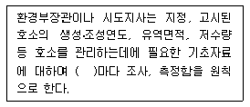
- 2년
- 3년
- 5년
- 10년
(정답률: 25%)
99. 비점오염저감시설 중 장치형 시설이 아닌 것은?
- 생물학적 처리형 시설
- 응집, 침전 처리형 시설
- 와류형 시설
- 침투형 시설
(정답률: 47%)
100. 오염총량초과부과금 산정 방법 및 기준에서 적용되는 측정유량(일일유량 산정시 적용) 단위로 맞는 것은?
- m3/min
- L/min
- m3/sec
- L/sec
(정답률: 60%)
KO2 = α × β × (O2* - O2) / (1 + KL × L / V)
여기서,
α = 용존산소의 표면으로부터 대기까지의 거리 (m)
β = 대기와 용존산소 사이의 질량전달계수 (m/hr)
O2* = 포화용존 산소농도 (mg/L)
O2 = 현재 용존산소 농도 (mg/L)
KL = Henry's law 상수 (L/atm)
L = 용액의 총 부피 (L)
V = 공기의 부피 (L)
이 문제에서는 α, β, O2*, O2, KL, L, V 중에서 O2*, O2, KL, L, V 값이 주어졌으므로, KO2을 계산할 수 있다.
KO2 = 0.9 × 20 × (9.0 - 7.0) / (1 + 1 × L / V)
여기서, L과 V는 모두 강의 부피이므로, L/V는 1이 된다. 따라서,
KO2 = 0.9 × 20 × 2.0 / 2
KO2 = 18
다음으로, 대기에서의 용존산소 공급량을 이용하여 KO2을 구할 수 있다.
0.08 = α × β × (O2* - O2) / (1 + KL × L / V)
여기서, O2* = 9.0, O2 = 7.0, KL = 1, L/V = 1 이므로,
0.08 = α × β × (9.0 - 7.0) / (1 + 1 × 1)
0.08 = α × β × 2 / 2
0.08 = α × β
따라서, α × β = 0.08 이므로, 정답은 "0.08"이다.